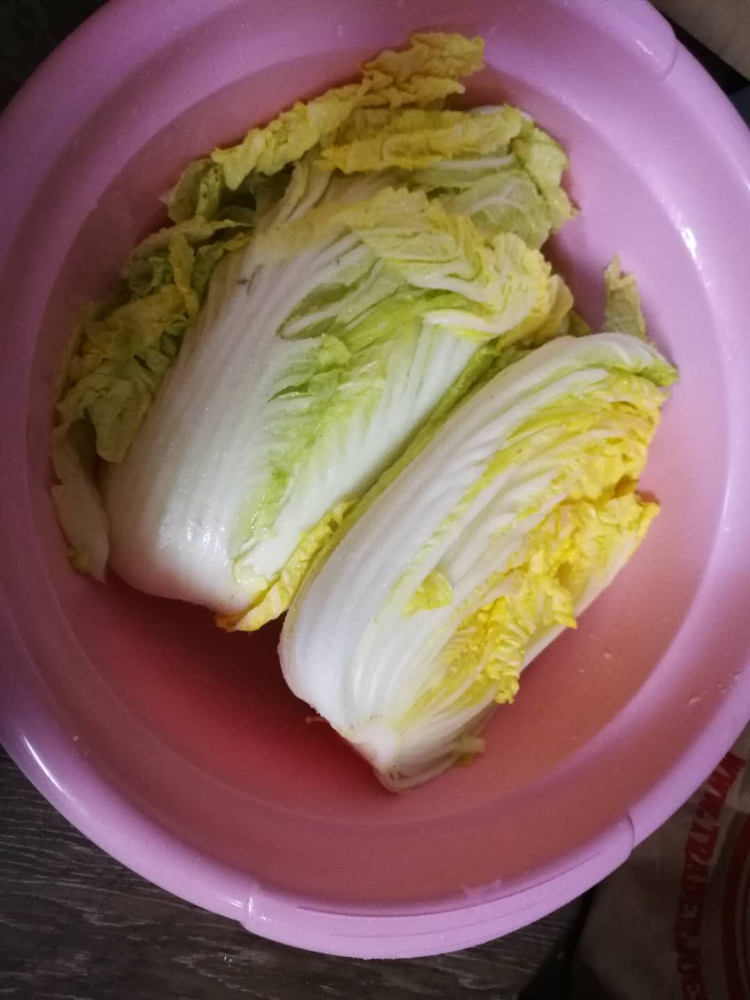
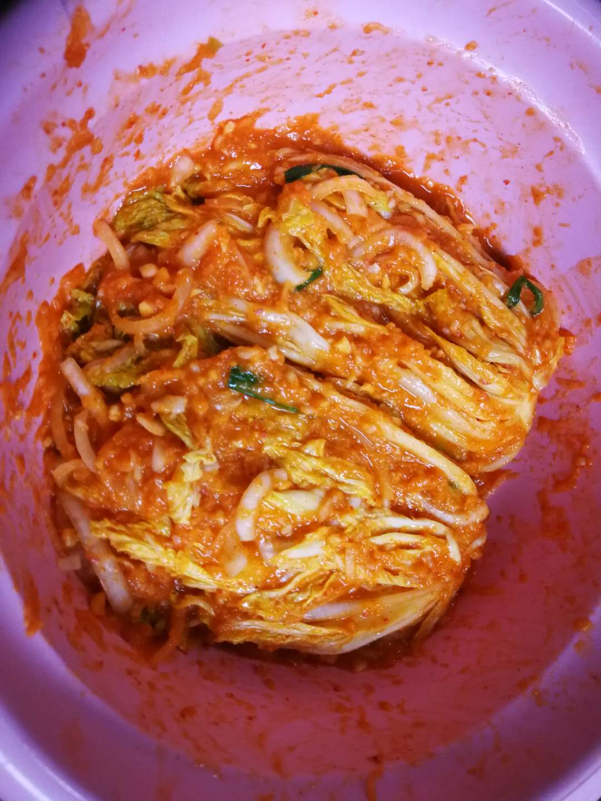
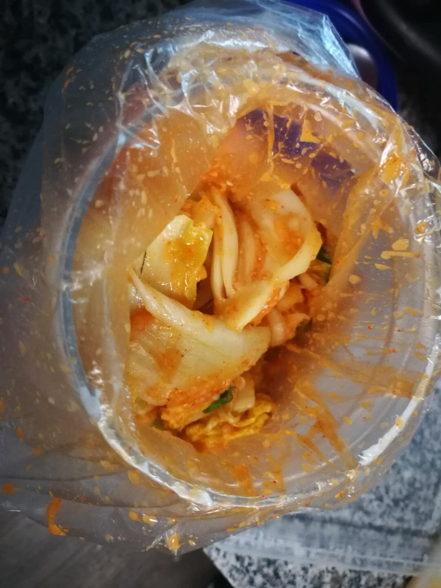
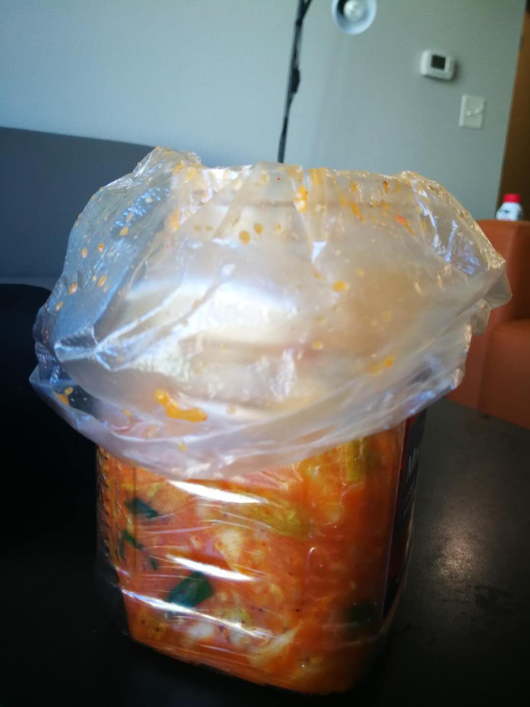

All the materials from the recipe listed on this page are based on my own experience, no any specific brands are required.
Korean ingrediants are recommended here since they would make the overall flavor more indigenous.
All the listed ingrediants are available online or in Chinese grocery store (J&P Fresh Market/ Asian Midway etc.)!
The Ingrediant List
Napa Cabbage x 1
Raddish x 1/2
White onion x 1/2 (not too small)
Green onion x 4
Ginger x 1/2 (around 500g)
Pear x 1/2
Apple x 1/2
Shrimp sauce x 1 teaspoon (Not necessary)
Kimchi Chili Seasonings x 200g (can be adjusted based on your preference)
Pickled salt x 0.8kg (pickled longer for less salt, shorter for more salt)
Regular salt x 2 teaspoon
Granulated sugar x 1.5 teaspoon
Fish sauce x 1 teaspoon
Rice flour x 100g
Steps of making kimchi:
Cut the cabbage in half after throughly rinsed it, then rubbed the pickled salt on every cabbage leaf, especially the white part (bathed the cabbage in salt water also works lol).
Rest the salted cabbage in a clean big basket for around couple hours (it would be too salted if you leave there for too long; I personally rest them for around 3-4 hours).
Slice the raddish and white onions, and chooped the green onions as you like.
Cut the apple, the pear, the ginger, and the garlic into small squared.
Blend all the materials mentioned in the last step (Do not add any water in this step!)
Add shrimp sauce, fish sauce, regular salt, suger, and kimchi seasoning, and througly mix them together.
Put 100g of water and rice flour into a small pot, mix througly.
Boil the water-flour mix (regularly stir the mix while boiling to avoid sticking your pot); it is ready when you see the mixture becoming transparent with some bubbles.
Gradually pour the water-flour mix into the sauce mixture; be careful of not to make the sauce too watery otherwise it could not stick on the cabbage leaves.
Rinsed out all the salt from the cabbage and squeeze the cabbage to get rid of water as much as you can.
Rub the sauce mix over each cabbage lea, mainly the white part.
Finally, rest the cabbage outside for 3-4 hours and put them in your fridge, develop it at least 2-3 days!
My Homemade Kimchi




PS: your kimchi will continue to age in your fridge, and it would be delicious for a couple of months when the heathy bateria count grows to their peak.
You are welcomed to enjoy your kimchi anytime you want!